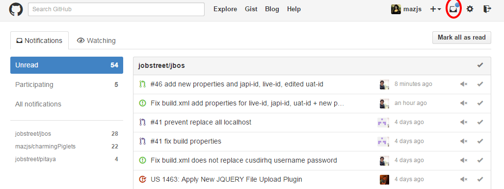
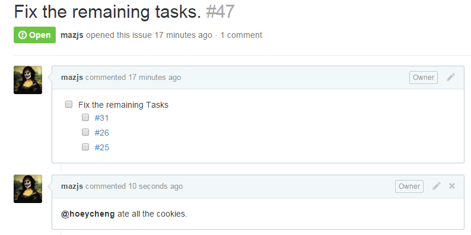
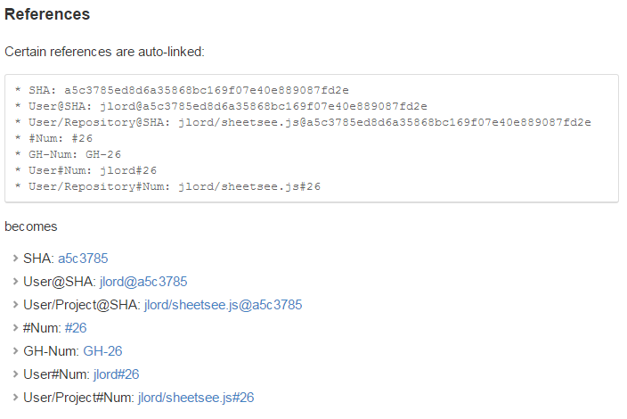
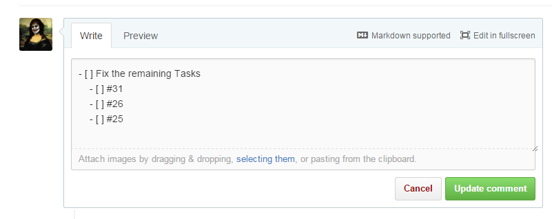
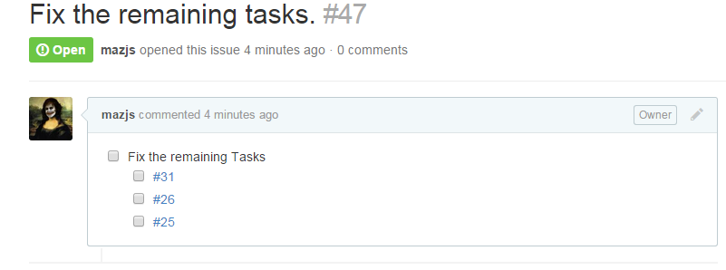
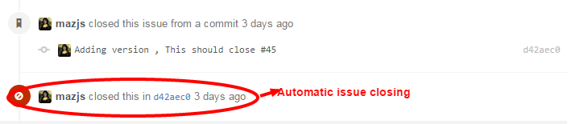

Created by Mazharul Anwar / @mazharul_anwar / mazharul[at]jobstreet[dot]com

Using @mentions in issue commit or in issues notifies the mentioned individual, great way to send in app notifications
References to commits or another issues are a great way to discuss problems.
 Writing sub tasks in an issue


We can auto close an issue by writing keywords in our commit message along with issue number.
Keywords: close, closes, closed, fix, fixes, fixed, resolve, resolves, resolved
Standard Way to version your software